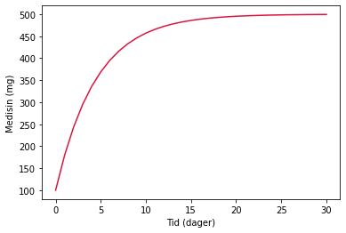

Tema 3: Diskret modellering¶
Oppgave 1: Tallfølger¶
Finn ut om rekka \(\sum_{n=1}^\infty \frac{1}{n^2}\) konvergerer eller divergerer.
N = 10000000
summen = 0
for n in range(1,N):
tall = 1/n**2
summen = summen + tall
print(summen)
1.6449339668472496
Rekka konvergerer.
Oppgave 2:Tallfølger II¶
Fibonacci-følgen er en kjent tallfølge der hvert tall er summen av de to foregående tallene:
\[1, 1, 2, 3, 5, 8, 13, 21, ...\]
Finn det hundrede tallet i følgen.
x0 = 0
x1 = 1
n = 100
for i in range(n-1):
x0_ny = x1
x1 = x1 + x0
x0 = x0_ny
print(f'Tall nr. {n} er {x1}')
Tall nr. 100 er 354224848179261915075
a = 2
b = 3
c = a
a = b
b = c
print(a,b)
3 2
Oppgave 3: Kvikksølv i huet¶
Forklar hva følgende kodesnutt gjør:
m0 = 1200 # Startmasse i mg
m = m0
tid = 100 # Tid i år
H = 27.4 # Halveringstid i år
tid_medisin = 12 # Medisin inntatt ved år
for t in range(tid):
if t >= tid_medisin:
H = H*0.98
m = m*0.5**(1/H)
print(f'Etter {tid} år er det {m:.0f} mg kvikksølv igjen i hjernen')
Etter 100 år er det 2 mg kvikksølv igjen i hjernen
Oppgave 4: Medisinakkumulering¶
a) Dersom 20 % av en medisin brytes ned i kroppen hver dag, hvor mye medisin har vi i kroppen til enhver tid dersom vi tar 100 mg medisin hver morgen?
# Løsningsforslag finnes også i videoen
import matplotlib.pyplot as plt
dose = 100
medisin = dose
nedbrytning = 0.80 # Andel medisin som er igjen i kroppen
tid = 30
t = []
total = []
t.append(0)
total.append(dose)
for i in range(1,tid+1):
medisin = medisin*nedbrytning + dose
total.append(medisin)
t.append(i)
plt.plot(t,total,color='crimson')
plt.xlabel('Tid (dager)')
plt.ylabel('Medisin (mg)')
plt.show()

b) Bivirkninger av medisinen kan oppstå dersom vi får over 350 mg medisin i blodet. Ta utgangspunkt i medisinprogrammet og modifiser dette slik at det finner ut hvor lenge vi kan gå på medisinen dersom vi bruker 100 mg hver dag. Finn også ut hvor mye medisin vi kan ta hver dag uten at vi får bivirkninger.
dose = 100 # mg medisin hver dag
medisin = dose
nedbrytning = 0.80
t = 0
while medisin < 350:
medisin = medisin*nedbrytning + dose
t = t + 1
print(f'Etter {t} dager har du {medisin:.2f} mg i kroppen. Det betyr at du må slutte med medisin etter {t-1} dager')
Etter 5 dager har du 368.93 mg i kroppen. Det betyr at du må slutte med medisin etter 4 dager
dose = 1 #mg medisin hver dag
medisin = dose
nedbrytning = 0.80
tid = 20
while medisin < 350:
medisin = dose
dose += 1
for i in range(1,tid+1):
medisin = medisin*nedbrytning + dose
print(dose)
71